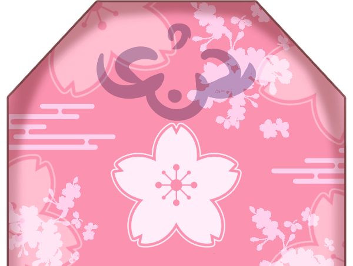
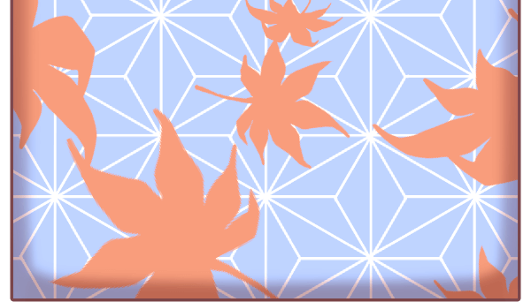
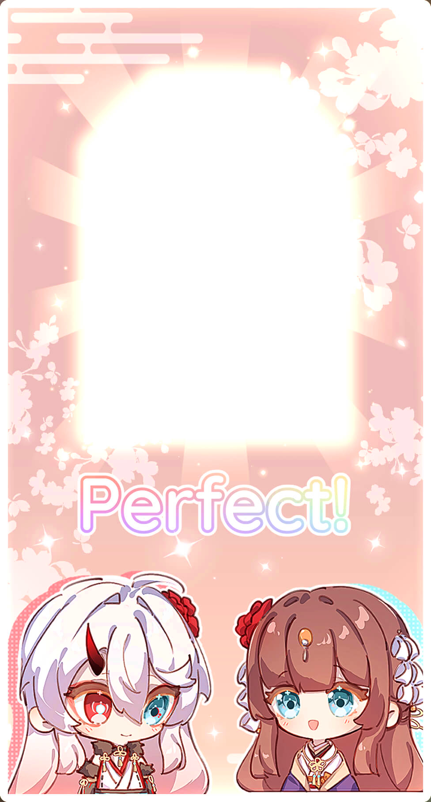

Loading... 0%
Welcome to Nanahara Shrine
Welcome to Nanahara Shrine!
To celebrate Nanahara sisters' birthday, we are gathering blessings from
all around the world.
Tap the birthday card below to send your wishes...
Come and see what luck awaits you today!


